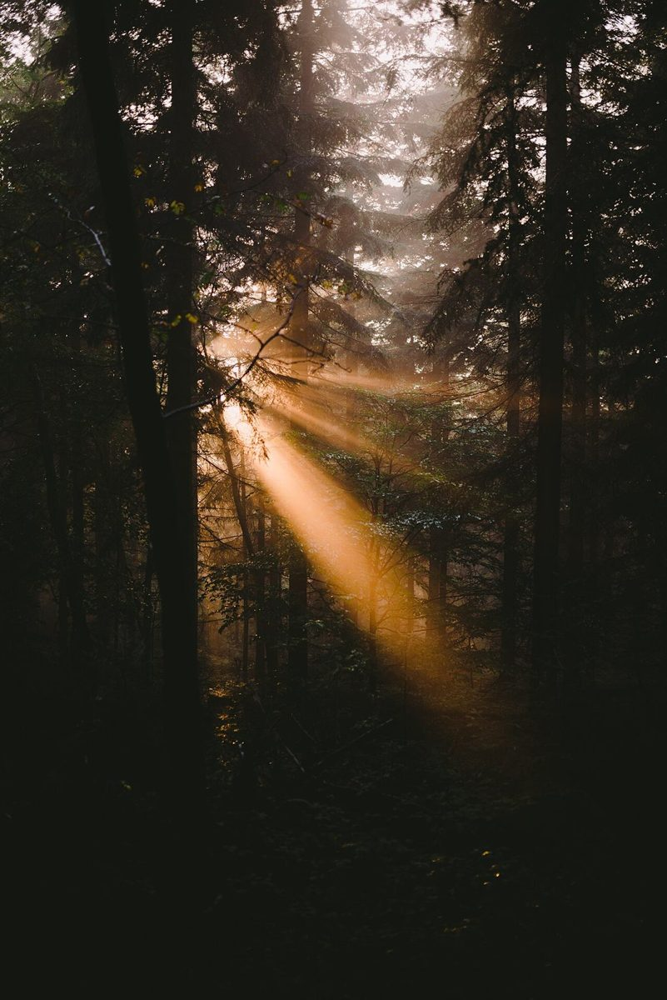
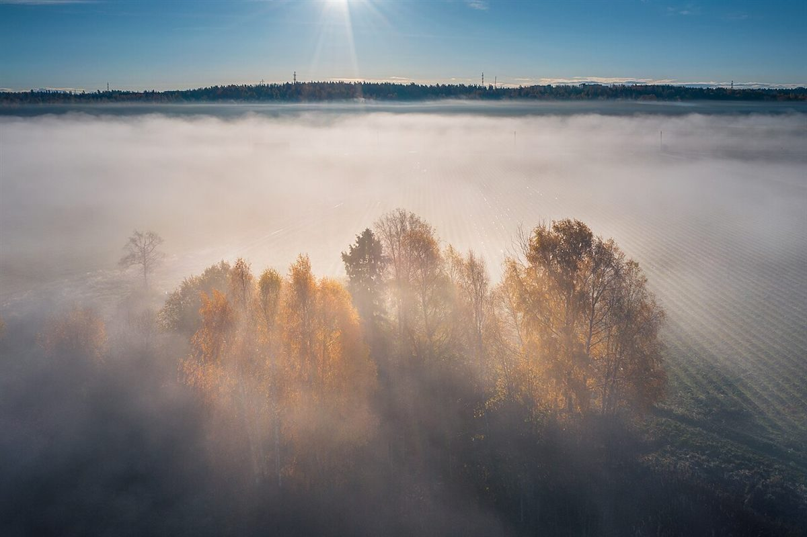

カフェ / 茨城県結城市
FOREST
BEAR
茨城県結城市のカフェ「FOREST BEAR」のご案内ページです。営業時間やメニューなど、詳しいことは準備中。電話は 0296-47-6009、まずはInstagramもどうぞ。

制作側の連想
ぬいぐるみの関節ピン、五つ
店名の由来は分かりません。制作側は「BEAR」という語から、手足が動くぬいぐるみの熊を連想しました。首、両腕、両足の五か所をピンで留めた作りです。そこでこのサイトは、五つのページを五つの関節ピンに見立てています。お店の理念・由来とは無関係の、制作側の連想です。
五つのピン
どこから動かしますか。
森の景色(イメージ)
写真で歩く、四つの森。
写真はお店や結城市の風景ではありません。「FOREST」の語から連想して選んだ、国外・撮影地不明のフリー素材です。




ご案内
お店のこと(確認できたものだけ)
| 所在地 | 〒307-0045 茨城県結城市上成130-3 |
|---|---|
| 電話 | 0296-47-6009 |
| 営業時間 | 準備中 |
| 定休日 | 準備中 |
| ご予約 | 準備中 |
| 駐車場 | 準備中 |
| SNS | Instagram @forest_bear9090 |